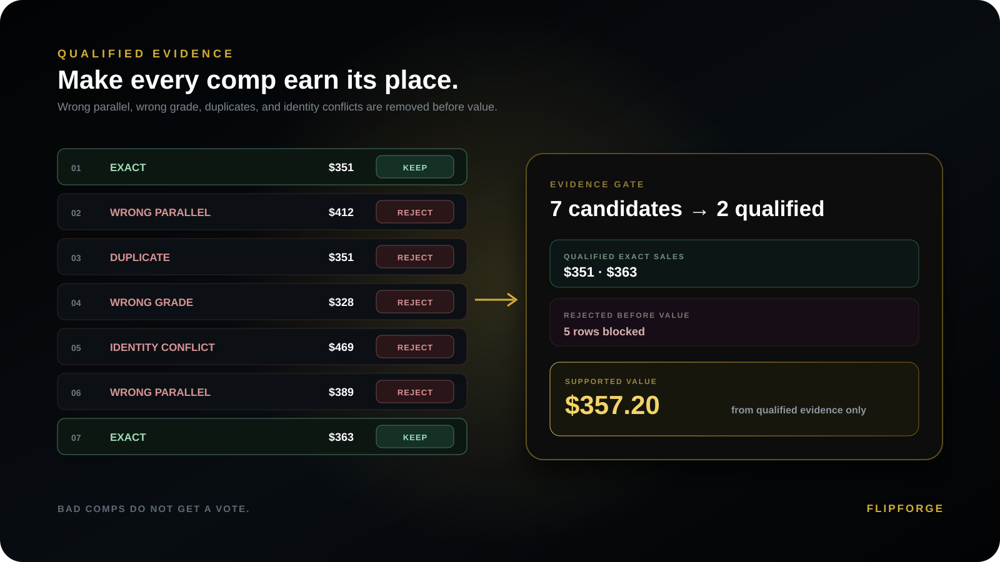

Wrong parallel
Same player, year, set and grade can still be a different market when the parallel or variation changes.
Identity before valuationA sports-card decision can look data-driven and still rest on the wrong parallel, a stale sale, one thin comp, or a best-case grade assumption. Evidence Lab teaches you what deserves confidence—and what does not.
EVIDENCE FILTER
Evidence Lab makes the filtering visible: candidate comparisons enter, mismatches are rejected, and only qualified evidence is allowed to support the decision.

False Confidence is the gap between how certain a sports-card price looks and how much the evidence actually deserves to support the decision.
Same player, year, set and grade can still be a different market when the parallel or variation changes.
Identity before valuationA reported completed sale can still mislead when the market around the decision has materially moved.
Timing changes relevanceOne exact dollar amount is still one observation. Precision is not the same thing as support.
One sale is not certaintyA PSA 10 headline can dominate the decision while realistic lower-grade outcomes erase the apparent edge.
Model more than best caseEach case starts with a number that looks useful. The lesson is the evidence rule that determines whether it actually belongs.
The decision needs evidence from the same card identity and grade lane.
Not if the $900 record is a different parallel. Similar-looking cards cannot silently become the same market.
Evidence decision · EXCLUDE AS EXACT COMP
Compare manufacturer, release, subset, parallel, card number and grade. If the parallel differs, that sale may help with broader context but cannot automatically represent the target card.
The $900 and $850 amounts above are fictional teaching figures—not observed transactions.
Independent source · Upper Deck official checklistShows distinct card and parallel classifications; it does not validate the illustrative prices.
One exact sale feels authoritative. It may be useful, but a single observation should not manufacture confidence the evidence base does not deserve.
Thin evidence stays thinEvidence decision · LIMITED SUPPORT
An exact reported sale can matter, but one outcome alone cannot establish repeatability or a reliable exit price. Keep sample size and dispersion visible instead of promoting a lone result into certainty.
Independent source · PSA on price swings ↗PSA discusses isolated sale swings; it does not verify FlipForge's calculations.
The premium looks huge. Model lower-grade probabilities, raw opportunity cost, grading cost and liquidity before calling the upside real.
Expected value over headline valueEvidence decision · VERIFY GRADE SCENARIOS
A raw card is not guaranteed PSA 10. Compare realistic grade outcomes, grading expense and downside before treating a Gem Mint sale as attainable.
Independent source · PSA grading standards ↗Defines grades and condition factors; it does not provide outcome probabilities for a specific raw card.
The sale was reported. The timing is wrong. An older completed sale may no longer represent the market around today’s decision.
Reported does not always mean relevantEvidence decision · CHECK FRESHNESS
Preserve the sale date and assess subsequent market changes. An older report may be genuine yet insufficient to establish a current, executable exit price.
Independent source · PSA pricing context ↗PSA discusses market volatility and patterns; freshness thresholds are FlipForge's own standards.
A seller can ask anything. Active listings are useful context, but they are never substituted for governed completed-sale evidence.
Asking price is contextEvidence decision · ASK IS NOT A COMPLETED SALE
Keep active-listing requests separate from transaction observations. Even a displayed Best Offer listing amount may differ from the accepted amount reported by a research source.
Independent source · eBay Product Research ↗eBay describes actual accepted Best Offer amounts in Product Research; access to its source data is separate from citation rights.
Numbered does not automatically mean liquid. Scarcity needs market context when neighboring parallels compete for the same collector demand.
Scarce is not the same as liquidEvidence decision · DEMAND STILL UNKNOWN
A PSA population figure measures PSA-graded examples, not every existing copy. Even genuinely low supply needs evidence of buyer demand and resale depth.
Independent source · PSA Population Perspective ↗Supports population-context limitations, not projected demand or liquidity for a particular card.
These examples explain industry evidence standards; they do not report live card transactions or FlipForge evaluation accuracy.
FlipForge can be sophisticated underneath while the customer keeps a clear mental model.
Identity before valuation. Year, set, card number, parallel, variation, grader and grade must belong to the target before price evidence gets a vote.
Card firstExact, context and excluded evidence stay distinct. A nearby card can be useful context without being allowed to support the exact value.
Separate evidence lanesVERIFY is better than manufactured certainty. When evidence conflicts, the correct decision can be to stop and confirm what is still unresolved.
Preserve uncertaintyThe original decision stays fixed. Later governed evidence tests what held, what failed and where confidence needs recalibration.
Review whether the original evidence and market conditions still support the saved reasoning.
Stress changes in supported value, liquidity, evidence strength and risk without rewriting history.
Compare the thesis with later evidence and preserve what held, what failed and what remains uncertain.
The publications below support general market principles. They do not endorse FlipForge, authenticate a particular transaction, license resale datasets, or validate our product's results.
Those are often the best ones to challenge. Before you buy. Know Why.
Try the identity challenge, then use FlipForge on your own listing when you are ready.